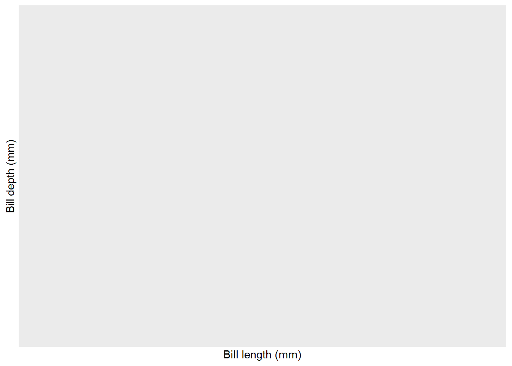
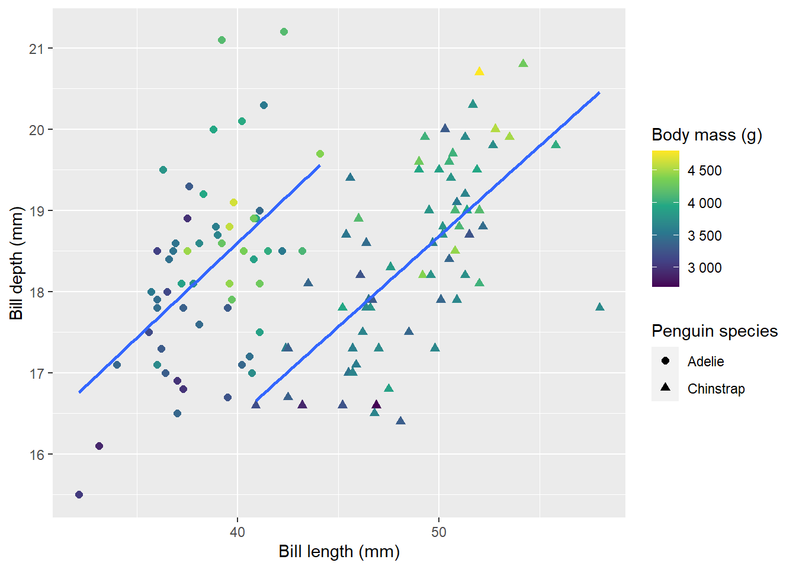
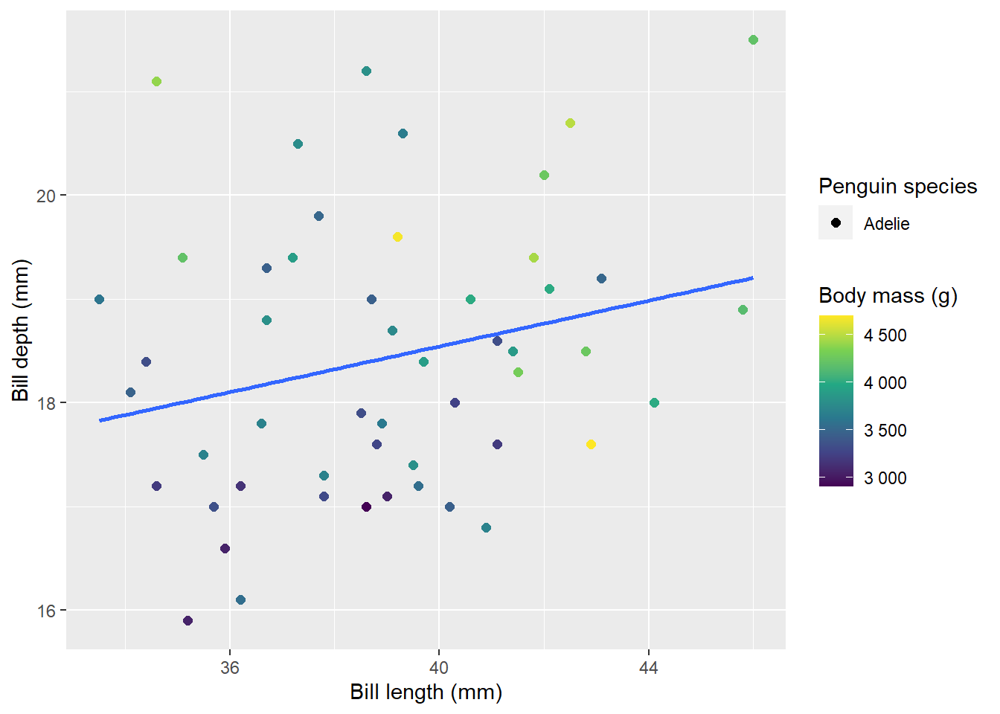

| Island name | Number of penguins |
|---|---|
| Biscoe | 168 |
| Dream | 124 |
| Torgersen | 52 |
Programmatically generate tabs in Rmarkdown
A walk-though for writing code that writes it’s own code.
Thank you to Adam A. Kemberling for providing some useful feedback on how to explain the panelset syntax and suggesting the use of dplyr::walk() instead of a for loop. His suggestion is here.
Purpose
I want to create a parametrized report in Rmarkdown. The report is populated after querying a database. In short, the Rmarkdown document must have a tab for each category of a categorical variable, and draw a ggplot in the tab. The number of categories depends on the result of the query.
We can simulate the problem by removing one of the islands from the palmerpenguins dataset:
There are three islands:
We will subset the data to choose only two islands:
df <- palmerpenguins::penguins %>%
filter(island != "Biscoe")
df %>%
distinct(island) %>%
knitr::kable(col.names = c("Remaining islands"))| Remaining islands |
|---|
| Torgersen |
| Dream |
Problem
If I hardcode the number of tabs one of the plots is drawn but has no data!
Biscoe
plot_penguins("Biscoe")
Dream
plot_penguins("Dream")
Torgersen
plot_penguins("Torgersen")
Bad solution
I could amend my plot_penguins function to display nothing if there is no data to plot:
plot_penguins <- function(isl) {
if (dim(df %>% filter(island == isl))[1] != 0) { #<<
df %>%
filter(island == isl) %>%
ggplot(aes(bill_length_mm, bill_depth_mm, colour = body_mass_g,
shape = species)) +
geom_point(cex = 2) +
geom_smooth(method = "lm", se = F) +
scale_color_viridis_c(labels = scales::number_format()) +
labs(
x = "Bill length (mm)",
y = "Bill depth (mm)",
colour = "Body mass (g)",
shape = "Penguin species"
)
} #<<
}Biscoe
plot_penguins("Biscoe")Dream
plot_penguins("Dream")Torgersen
plot_penguins("Torgersen")
This is a poor solution. In the case where there are only a small number of possible categories, it works. However, if there are many potential tab names and many are empty, having to click through and find content is not pleasing at all!
Better solution
A better solution is to generate the tabs programmatically, with code that writes itself depending on the contents of the returned dataset.
I am creating the tabs with Garrick Aden-Buie’s xaringanExtra package. Have a look at the specifics in the presentation below.
knitr::include_url("https://pkg.garrickadenbuie.com/xaringanExtra/panelset/?panelset=r-code#2")Other useful resources incude this Science Loft post and this Stack Overflow question.
Tools
In vanilla Rmarkdown you can create the tabs with a simple heading structure.
## Here are the penguins {.panelset}
### Biscoe
plot_penguins("Biscoe")
### Dream
plot_penguins("Dream")I opt to use Pandoc’s fenced div structure instead, to avoid inadvertently creating additional tabs with a third level heading. It looks like this:
::::: {.panelset}
::: {.panel}
[Biscoe]{.panel-name}
plot_penguins("Biscoe")
:::
::: {.panel}
[Dream]{.panel-name}
plot_penguins("Dream")
:::
:::::It is worth highlighting that the tabset
- begins with
::::: {.panelset}and, - ends with five colons
:::::
Each individual tab needs to
- open with
::: {.panel}, - include a
[Panel name specified here]{.panel-name}, and - close with three colons
:::
How does it work?
Now I can programmatically create my tabs and plots within the fences. I start with a function that makes the tabs. Then I open the tabset, get a list of the islands present, and walk across each one applying my make_tab function before closing the tabset.
make_tab <- function(isl) { # function to make the tabs
cat("::: {.panel}\n") # Open tab
cat("##", isl, "{.panel-name}\n") # Label tab
p <- plot_penguins(isl) # Create plot
print(p) # Display plot
cat("\n") # Space
cat(":::\n") # Close tab
}
::::: {.panelset}
isl_list <- unique(df$island) %>% # Get a list of islands present in the dataset
as.character()
dplyr::walk(isl_list, make_tab) # make the tabs for each island that is there
:::::Good to remember
Wrap code you want executed in
cat(), andprint()your ggplot objects.Set code options to
results = 'asis'for the code chunk that makes your tabs. According to the Rmarkdown Cookbook:
This option tells knitr not to wrap your text output in verbatim code blocks, but treat it “as is.” This can be particularly useful when you want to generate content dynamically from R code.
- Put in lots of line breaks to separate Rmarkdown content, e.g. frequent uses of
cat("\n")between elements.
Does it work?
Yes! Look at that, just two tabs and no empty plots!
isl_list <- unique(df$island) %>% as.character()
walk(isl_list, make_tab)Torgersen

Dream

I hope that this was useful. Please create an issue on Github if you have any suggestions.
Postscript
This is the function that plots the figures:
plot_penguins <- function(isl) {
df %>%
filter(island == isl) %>%
ggplot(aes(bill_length_mm,
bill_depth_mm,
colour = body_mass_g,
shape = species)) +
geom_point(cex = 2) +
geom_smooth(method = "lm", se = F) +
scale_color_viridis_c(labels = scales::number_format()) +
labs(
x = "Bill length (mm)",
y = "Bill depth (mm)",
colour = "Body mass (g)",
shape = "Penguin species"
)
}